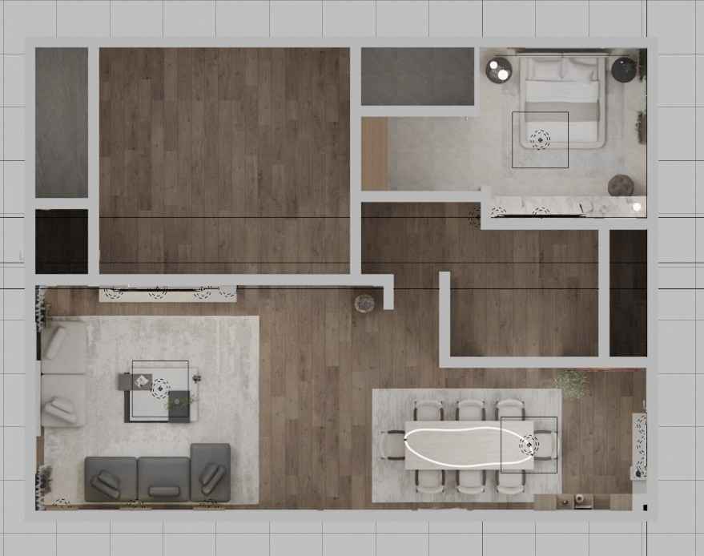
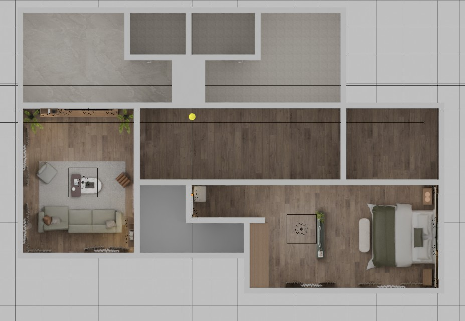
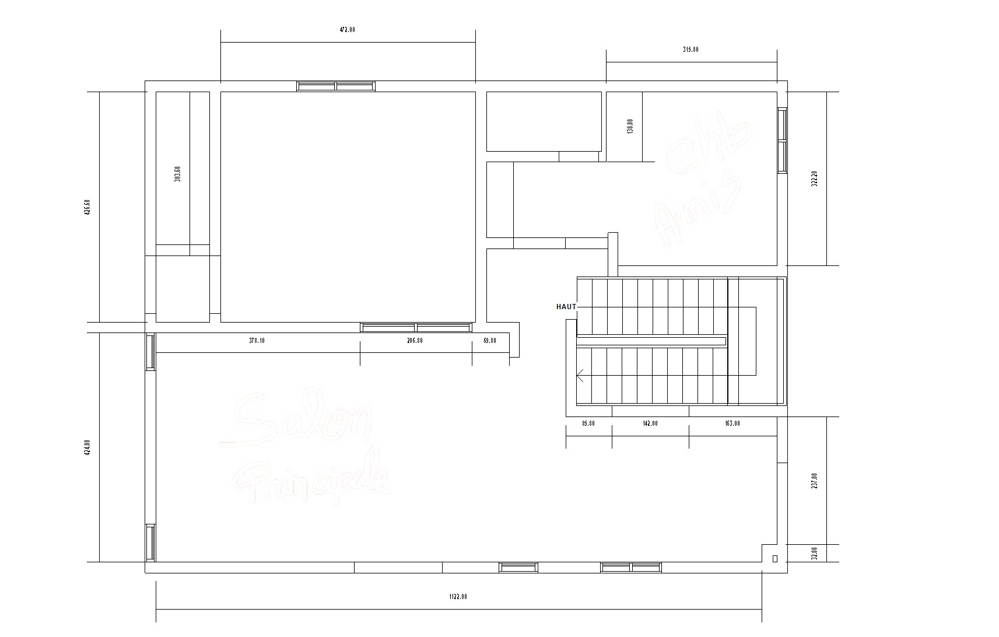

Villa — Rez-de-chaussée & Étage 1
Ce dossier présente l'aménagement intérieur de quatre espaces de la villa : au rez-de-chaussée, le salon principal ouvert sur la salle à manger et la chambre d'amis ; à l'étage, le séjour et la chambre principale.
Chaque pièce est traitée comme une composition à part entière, tout en partageant un même vocabulaire : des parois rythmées par des panneaux à joints creux, la chaleur du bois, la présence ponctuelle de la pierre, une lumière indirecte qui dessine les volumes et des œuvres d'art qui donnent à chaque espace son caractère.
Des gorges lumineuses soulignent le périmètre des plafonds ; les niches, les lames de bois et les panneaux de pierre sont rétroéclairés. La lumière indirecte crée une atmosphère enveloppante, sans éblouissement.
Panneaux muraux à joints creux, colonnes de bois et bandes de lames verticales structurent les murs et donnent aux pièces leur rythme et leur hauteur.
Le bois, la pierre aux veinages marqués, les textiles doux et les tapis clairs composent une palette tactile, dans des tons neutres et chauds.
Chaque espace s'articule autour d'une œuvre ou d'un mur signature qui apporte une note de couleur et de personnalité.
Teintes relevées directement dans les rendus du projet (valeur médiane de chaque matière, codes HEX). Elles restent à confirmer sur échantillons physiques.
Échantillons extraits des rendus. Les références fournisseurs, essences, finitions et formats seront précisés dans le cahier des prescriptions.



Un grand espace de réception ouvert, où le salon, la salle à manger et la bibliothèque se répondent. Les murs sont rythmés par des panneaux crème et des colonnes de bois rétroéclairées ; une gorge lumineuse court le long du plafond et unifie l'ensemble.
Deux canapés modulaires bas — l'un en cuir taupe foncé, l'autre crème — se font face autour d'une table basse en bois noir et pierre veinée, posés sur un grand tapis clair.
Le mur TV associe des panneaux de bois aux angles arrondis, une bande de lames verticales et des niches lumineuses. Le meuble bas suspendu laqué blanc libère le sol et allège la composition.
Une grande table en pierre claire accueille huit chaises en bouclé à structure en bois foncé. Au-dessus, une suspension lumineuse aux courbes libres dessine un trait de lumière.
Les passages entre les espaces sont traités comme des scènes : une colonne de marbre veiné porte une console et une sculpture, la bibliothèque asymétrique en bois se prolonge jusqu'au plafond.
Une chambre lumineuse et douce, entre tons clairs et touches de bois. Le mur de tête de lit joue la sobriété ; le mur opposé réunit un habillage de marbre blanc veiné, le meuble TV et une coiffeuse.
Lit plateforme tapissé aux angles arrondis, suspensions globe, chevets ronds en métal noir ; face au lit, un meuble suspendu en bois à plateau de marbre se prolonge en coiffeuse.
Un salon plus intime, baigné de lumière par de hautes fenêtres. Une grande œuvre graphique rouge et blanche répond à la bibliothèque éclairée ; les assises gris taupe et les accents cognac installent une atmosphère chaleureuse.
Canapé d'angle gris taupe, coussins pied-de-poule et cuir cognac, table basse ovale en marbre veiné associée à une table d'appoint en bois foncé, fauteuil à structure métallique et pouf en cuir cognac.
Le mur TV s'inscrit dans des panneaux crème à joints creux ; une étagère verticale en bois éclairée, rythmée par un montant de marbre, l'accompagne. La double porte en bois à fentes vitrées marque l'entrée.
Une suite enveloppante construite autour d'une bande de marbre brun foncé rétroéclairée. La tête de lit aux formes arrondies, le linge kaki et les touches dorées composent une ambiance feutrée et précieuse.
Grande tête de lit enveloppante, chevets en bois, suspensions globe à anneau doré, banc capitonné à piètement doré ; face au lit, un dressing en bois toute hauteur.
Les menuiseries intégrées dessinent l'architecture intérieure de chaque pièce. Les plans de fabrication, dimensions et finitions seront détaillés dans les dossiers d'exécution.
Du salon de réception à la chambre principale, le projet décline un même langage : des parois composées, la chaleur du bois, la profondeur de la pierre et une lumière indirecte omniprésente.
Chaque espace affirme ensuite sa propre identité — l'art au salon, le marbre clair dans la chambre d'amis, la couleur au séjour de l'étage, la pierre sombre et le kaki dans la chambre principale — pour une demeure à la fois unifiée et vivante.
Villa — Rez-de-chaussée & Étage 1
Novembre 2026